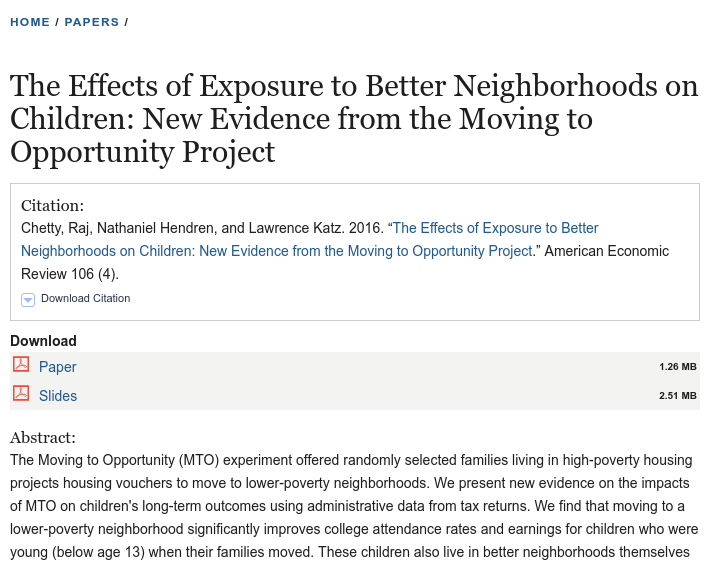

COM 411: Networked Racism
Today’s Dad Joke
How can you identify a dogwood tree?
By its bark
Housekeeping
- Exam
- Overall, quite good!
- Hopefully a helpful way to review
- Options for making up for a bad exam
- Get feedback to your peers! (And upload to Brightspace)
- Final draft DUE May 4
- Self Assessment Reflection
- Feedback for me (Purdue / Google Form / email / Discord)
Plan for today
- Networks and Racism lecture
- Discussion
- Time for final project, etc.
Networks and Race
Racism in America
- Overt, animus-based racism is (probably) declining

But there is still lots of racism
- Some is psychological
- Unconscious biases
- Homophily
- Some is “structural” and a result of past racism
- Examples in the built environment?
- In education?
- In hiring?
Networks and racism
- How can networks produce or maintain racially biased outcomes?
- How does this tie into ideas about social/cultural/economic capital?
- How can we use what we know about networks to reduce racial inequality?
Networks matter a lot

- In the 90s, people were given vouchers to move to lower poverty areas
- Chetty at al. found that children did better as adults the longer they lived in higher income areas
- Why? One (the best!) explanation is that people gain greater social capital
Takeaways
- Networks provide a hidden inertia to society, reproducing the world as it is
- Differences in economic capital or cultural capital are more visible
- Our achievements are partially a function of our undeserved social networks
- Worth thinking about “network equality”
Discussion
Thank you!
- Thank you all for making this such a wonderful class!